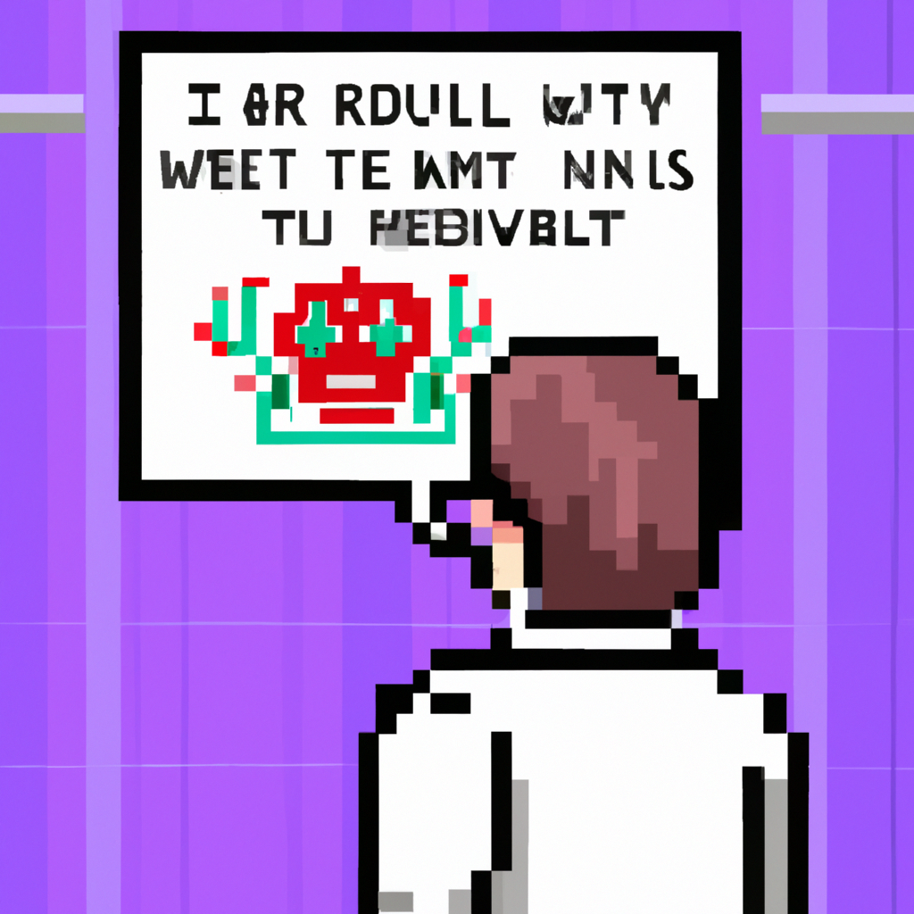

Why AI will never replace the radiologist
The rise of artificial intelligence (AI) has been met with both excitement and trepidation. In the medical field, AI has been touted as a revolutionary tool to diagnose diseases, particularly in radiology. But while AI has certainly revolutionized the way we approach diagnosis, it can never replace the human element of a radiologist.
One of the biggest problems with AI in radiology is its lack of accuracy. While AI can be trained to recognize certain patterns, it will never be able to make the same level of diagnosis as a trained radiologist. This is due to the fact that AI is only able to recognize patterns and does not have the same understanding of human anatomy and physiology that a radiologist has. As a result, AI can often miss certain pathology or misdiagnose a patient.
Another problem with AI in radiology is that it is unable to provide the same level of patient care as a radiologist. While AI can detect patterns, it cannot provide the same level of personal care and understanding that a radiologist can. Radiologists spend time getting to know the patient and their history, and they can provide personalized advice and care. AI cannot provide this kind of personalized care and understanding.
Finally, AI is unable to provide the same level of communication and collaboration with other medical professionals as a radiologist. Radiologists often work closely with other medical professionals, such as surgeons, to ensure the best possible diagnosis and treatment. AI is unable to provide this kind of communication and collaboration.
In summary, while AI has certainly revolutionized the way we approach diagnosis, it can never replace the human element of a radiologist. AI is limited in its accuracy, cannot provide the same level of personalized care and understanding, and cannot provide the same level of communication and collaboration with other medical professionals. For these reasons, AI will never replace the radiologist.